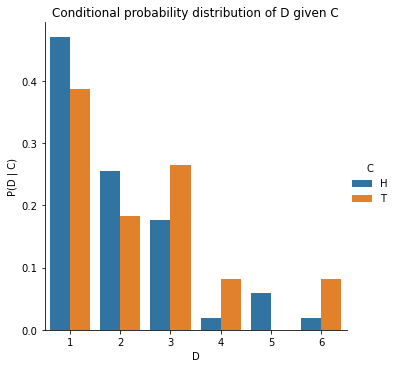
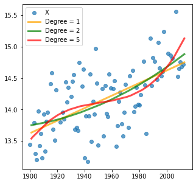

merged[['C', 'D', 'P(D | C)']]axs = sns.catplot(data=merged, x="D", y="P(D | C)", hue="C", kind="bar");axs.set(title="Conditional probability distribution of D given C\nNote that the blue bars add up to 1");

Note that the sum of conditional probabilites, unlike joint probability, is not 1.
And \(\sum_D P(D|C=\text{Heads})\) and \(\sum_D P(D|C=\text{Tails})\) are individually probability distributions that each sum to 1, over different values of \(D\).
In other words, in the plot above, the blue bars add up to 1 and the orange bars add up to 1.
Rearranging the definition of conditional probability, we get the product rule:
\[ P(A, B) = P(A | B) \cdot P(B) \]
Similarly, we can also write:
\[ P(A, B) = P(B | A) \cdot P(A)\]
In summary,
\[ P(A, B) = P(A | B) \cdot P(B) = P(B | A) \cdot P(A)\]
Chain Rule \(P(A, B, C)\)
The chain rule is a generalization of the product rule to more than two events.
$ P(A, B, C) = P(A | B, C) P(B, C) $
\(P(A, B, C) = P(A | B, C) \cdot P(B | C) \cdot P(C)\)
since \(P(B, C) = P(B | C) \cdot P(C)\) as per the product rule.
Chain rule essentially allows expressing the joint probability of multiple random variables as a product of conditional probabilities. This is useful because conditional probabilities are often easier to estimate from data than joint probabilities.
Inclusion-Exclusion Principle \(P(A \vee B)\)
Inclusion-Exclusion Principle is a way of calculating the probability of two events occurring i.e. $ P(A=a B=b) $ denoted generally as \(P(A = a \vee B = b)\).
It is defined as:
\[ P(A = a \vee B = b) = P(A = a) + P(B = b) - P(A = a \wedge B = b) \]
For example, if we are rolling two dice, the Inclusion-Exclusion Principle can be used to calculate the probability of rolling a 1 on the first die or a 2 on the second die.
$P(_1=H _2=T) $
$ = P(_2=H) + P(_1=T) - P(_2=H ∧ _1=T)$
$ = 0.5 + 0.5 - 0.25 $
$ = 0.75$
Bayes Theorem \(P(A|B)\)
Bayes theorem is a way of calculating conditional probability. For example, if we are rolling two dice, Bayes theorem can be used to calculate the probability of rolling a 1 on the first die given that we rolled a 2 on the second die.
\[ P(A | B) = \frac{P(B | A) \cdot P(A)}{P(B)} \]
\(P(A|B)\) in the context of Bayes theorem is called the Posterior probability.
\(P(B|A)\) is called the Likelihood.
\(P(A)\) is called the Prior probability.
\(P(B)\) is called the Evidence, also known as Marginal Likelihood.
Bayes Theorem allows a formal method of updating prior beliefs with new evidence and is the foundation of Bayesian Statistics. We will talk more about this when we talk about Statistics.
In machine learning, the task is often to find \(P(Y | X_1 = x_1, X_2 = x_2, \ldots X_D = x_D)\) i.e. the probability of an unknown Y, given some values for \(D\) features (\(X_1, X_2 \ldots X_D\)). Bayes theorem allows us to calculate this probability from the data.
Let’s assume we are interested in predicting if a person is a football player (\(Y_F=1\)) or not (\(Y_F=0\)), given their height (\(X_H\)) and weight (\(X_W\)).
Say, we observe a person who is 7 feet tall and weighs 200 pounds. We can use Bayes theorem to calculate the probability of this person being a football player using the following equation:
Note that here \(P(X_H = 7, X_W = 200 | Y_F)\) is the Likelihood probability of observing someone who is 7 feet tall and weighs 200 pounds, knowing if they are a football player.
\(P(Y_F)\) is the Prior probability of a person being a football player out of the entire population.
\(P(X_H = 7, X_W = 200)\) is the probability of the Evidence i.e. probability of observing anyone who is 7 feet tall and weighs 200 pounds in the entire population.
Recall that all supervised learning is based on the assumption that there is a relationship between the input variables \(X\) and the output variable \(y\) i.e.
\[\textbf{y} = f(\textbf{X})\]
where \(f\) is some unknown function.
\(X\) here simply is some data that we have as a pd.DataFrame whereas \(y\) here is the target variable, one value for each observation, that we want to predict, as of type pd.Series.
The form of supervised learning we have talked about so far is classification. As discussed previously, in classification, the output variable \(y\) is a discrete target variable e.g. sentiment \(\in\) {positive, neutral or negative}, ring \(\in\) {A, B} or diagnosis \(\in\) {malignant, benign} etc.
The other type of supervised learning that we will talk about in this notebook is called Regression. In regression, the target variable is to predict a continuous target variable i.e. \[\mathbf{y} \in \mathbb{R^N}\].
For example, predicting the stock price of a publicly listed company, predicting the price of a house in dollars, or predicting the average surface temperature on Earth next year are all examples of regression problems.
Note that the splitting of the data into training and test sets is exactly the same as in classification. The only difference is that the target variable is continuous instead of discrete.
Linear Regression
Linear Regression is the simplest solution to any regression problem.
In linear regression, the relationship between the input variable(s) \(X\) and the output variable \(y\) is assumed to be a linear.
Univariate Linear Regression
For simplicity, let’s assume we only have one input variable \(x\) and one output variable \(y\).
Our goal, then is to find a linear function \(f\) that maps \(x\) to \(y\):
\[\mathbf{y} = f(\mathbf{x})\]
Recall that the equation for a straight line is $ f(x) = mx + b $
where \(m\) is the slope of the line and \(b\) is the y-intercept. Assuming that \(f\) is a linear function, we can write:
In the code below, the data is split into training and test sets, similar to what we did in the classification examples for Naive Bayes and Nearest Neighbor models.
In the code cell below, two linear functions are plotted against the training data. Both implement the same linear function \(f(x) = mx + b\) but with different values of \(m\) and \(b\).
The evaluation of regression models is done similar to classification models. The model is trained on the training set and then evaluated on the test set.
The difference is that the training has an internal evaluation metric that is minimized to find the values of coefficients such as \(m\) and \(b\) that best fit the training data.
For example, model-1 and model-2 above would yield different scores for how well they fit the training data. The model with the lowest score is the one that best fits the training data.
Once the model is trained, the test set is used to evaluate the model.
The internal evaluation metrics for linear regression during training are similar to the ones used in extrinsic evaluation on the test set.
The most common evaluation metrics for linear regression are as follows:
Residuals
Residuals are the difference between the true values of y and the predicted values of y.
\[\text{Residual}_i = y_i - \hat{y}_i\]
where \(y_i\) is the \(i^{th}\) true value of the target variable and \(\hat{y_i}\) is the \(i^{th}\) predicted value of the target variable i.e. \[\hat{y_i} = m x_i + b\]
The Mean Absolute Error (or MAE) is the average of the absolute differences between predictions and actual values. It gives an idea of how wrong the predictions were. The measure gives an idea of the magnitude of the error, but no idea of the direction (e.g. over or under predicting).
In the code cell below, two linear functions are plotted against the training data. Both implement the same linear function \(f(x) = mx + b\) but with different values of \(m\) and \(b\).
Taking the square root of the mean squared error converts the units back to the original units of the output variable and can be meaningful for description and presentation. This is called the Root Mean Squared Error (or RMSE).
The \(\text{R}^2\) (or R Squared) metric provides an indication of the goodness of fit of a set of predictions to the actual values. In statistical literature, this measure is called the coefficient of determination. This is a value between 0 and 1 for no-fit and perfect fit respectively.
Multiple linear regression (MLR), also known simply as multiple regression, uses multiple (> 1) input variables (\(X\)) to predict the outcome of a target variable (\(y \in \mathbb{R}\)) by fitting a linear equation to observed data.
\[\mathbf{y} = f(\mathbf{X})\]
Here \(f\) is a linear function of the form:
\[f(\mathbf{X}) = \mathbf{X}\mathbf{m} + b\]
where \(X\) is a matrix of \(N\) observations and \(D\) features and \(y\) is a vector of \(N\) observations.
The goal of multiple linear regression is to find the values of \(m_1, m_2, \dots, m_D\) and \(b\) that best fit the data.
Now let’s load a dataset and try to find the best values of \(m_1\) and \(b\) that fit the data.
The code below uses data from California Housing Dataset to predict the median house value in California districts given the following input variables:
MedInc: Median income in block.
HouseAge: Median house age within a block (measured in years).
AveRooms: Average number of rooms within a block of houses.
AveBedrms: Average number of bedrooms within a block of houses.
Population: Total number of people residing within a block.
AveOccup: Average number of people occupying each house within a block.
Longitude: A measure of how far west a house is; a higher value is farther west.
Latitude: A measure of how far north a house is; a higher value is farther north.
The target variable is:
Median house value for households within a block (measured in US Dollars).
import pandas as pd from sklearn import datasetscalifornia = datasets.fetch_california_housing()X = pd.DataFrame(california.data, columns=california.feature_names)y = pd.Series(california.target, name='Price')
The plot indicates that AveBedrms, MedInc and AveRooms have the highest positive relationship with the Price of the house whereas AveRooms, Latitude, Longitude have the strongest negative relationship with the target variable Price of the house.
Polynomial Regression
Polynomial functions are functions that have the form:
\[f(x) = b + m_1 x + m_2 x^2 + m_3 x^3 + ... + m_n x^n\]
where \(b, m_1, m_2, m_3, ..., w_n\) are the coefficients of the polynomial function and \(n\) is called the degree of the polynomial. In other words, the degree of a polynomial function is the highest power of the variable in the polynomial function.
Note that the linear function \(f(x) = mx + b\) is a special case of the polynomial function. More specifically, a linear function is a polynomial function of degree 1.
Polynomial functions of degree 2 or higher are called non-linear functions. As the degree of the polynomial function increases, the function becomes more flexible and can fit more complex patterns in the data.
If we have only one input variable \(x\) to predict the output variable \(y\), then the polynomial function becomes:
\[y = f(x) = b + m_1 x + m_2 x^2 + m_3 x^3 + ... + m_n x^n\]
In matrix notation, polynomial regression can be written as:
\[f(\mathbf{x}) = \mathbf{X}\mathbf{m} + b\]
where \(\mathbf{X}\) is a matrix of \(N\) observations and each feature is raised to a power from 1 to \(D\).
Implementing polynomial regression in sklearn is similar to linear regression but with one additional step. We need to transform the input data into a polynomial matrix before fitting the model. In sklearn, this is done using the PolynomialFeatures class.
The code cell below implements polynomial regression of degrees 1, 2 and 5 on the Average Land Temperature dataset.
from sklearn.linear_model import LinearRegressionfrom sklearn.preprocessing import PolynomialFeaturesfrom sklearn.pipeline import make_pipelineplt.figure(figsize=(5, 5))plt.scatter(X_train, y_train, label='X', alpha=0.7);colors = ['orange', 'green', 'red']for i, degree inenumerate([1, 2, 5]):# Create polynomial features for X_train and X_test poly = PolynomialFeatures(degree=degree) X_train_poly = poly.fit_transform(X_train) X_test_poly = poly.fit_transform(X_test)# Fit a linear regression model to the training data model = LinearRegression() model.fit(X_train_poly, y_train)# Predict y values for X_test y_pred = model.predict(X_test_poly)# Plot the predictions plt.plot(X_test, y_pred, linewidth=3, label='Degree = %s'% degree, alpha=0.7, color=colors[i]);plt.legend();

Note that with increasing degree, the polynomial function can fit more complex patterns non-linear trends in the data.
Underfitting vs. Overfitting
This example demonstrates the problems of underfitting and overfitting and how we can use linear regression with polynomial features to approximate nonlinear functions.
The plot shows the function that we want to approximate, which is a part of the cosine function. In addition, the samples from the real function and the approximations of different models are displayed. The models have polynomial features of different degrees. We can see that a linear function (polynomial with degree 1) is not sufficient to fit the training samples. This is called underfitting.
A polynomial of degree 4 approximates the true function almost perfectly. However, for higher degrees the model will overfit the training data, i.e. it learns the noise of the training data. This is called overfitting. We evaluate quantitatively overfitting / underfitting by using cross-validation.
We calculate the mean squared error (MSE) on the validation set, the higher, the less likely the model generalizes correctly from the training data.
Ideally, you want to strike a balance between underfitting (high training error, high testing error) and overfitting (low training error, high testing error) by picking a model complexity (number of parameters) that generalizes well to unseen data.
Note that model complexity here refers to the number of parameters in the model. For example, univariate linear regression model has 2 parameters (slope and y-intercept) whereas a polynomial regression model of degree 2 has 3 parameters (slope, y-intercept and coefficient of \(x^2\)).